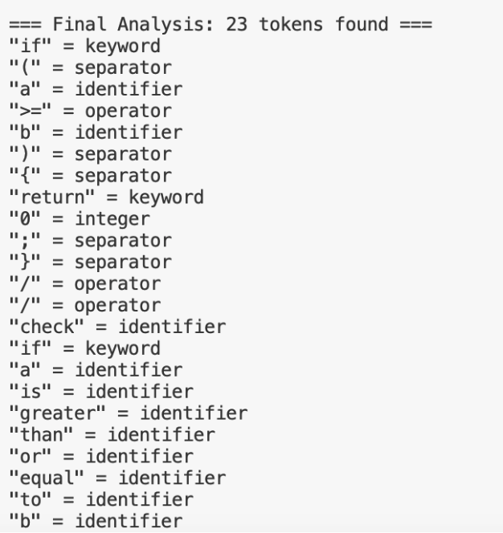

Description: This Python project scans source code and breaks it into lexical tokens using regular expressions. It recognizes elements like keywords, identifiers, operators, and literals. The tool helps visualize how compilers perform lexical analysis.
Technologies Used: Python, Regular Expressions, VS Code
Challenges Faced: Creating a robust regex engine to handle real-world syntax while keeping token classification accurate. Balancing simplicity and flexibility in parsing logic.
Outcome: Built a working lexical analyzer that successfully handles a wide range of inputs. It was used as a final class project and presented in a peer review session. Uploaded to GitHub for continued development and sharing.
View on GitHub